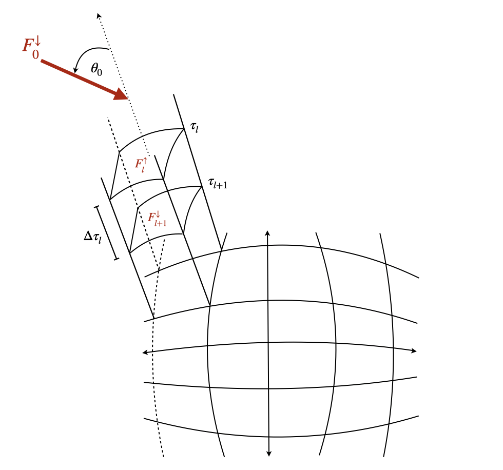
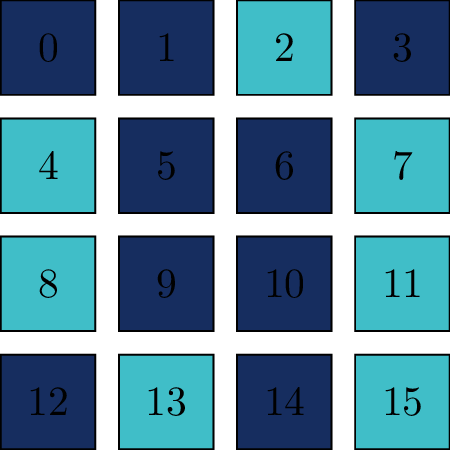

Training Strategy
This section describes the training configuration, data preparation pipeline, and optimization strategies for RTnn.
Data Preparation
RTnn processes NetCDF files containing Land Surface Model (LSM) data with the naming convention: rtnetcdf_{processor_rank:03d}_{year}.nc
{kind=link}

Structure of the vegetation canopy
Vertical Canopy Structure:
The model simulates radiative transfer through multiple vertical layers (default: 10 layers), representing different heights within the vegetation canopy. Each layer has its own optical properties (leaf area index, single scattering albedo, etc.) that influence radiation propagation.
Processor Rank Distribution:
Data is distributed across multiple processor ranks (typically 16 ranks). For training, a random subset (60%) is selected to reduce bias and improve generalization.
{kind=link}

Example of randomly selected MPI blocks used during training
Random Spatial Mapping:
During training, a new random spatial mapping is generated for each time step
60% of processor ranks are randomly selected (data augmentation)
The same mapping applies to all spatial batches within a time step
Validation/testing uses 100% of processor ranks (deterministic)
Input Features (121 channels):
The input features are constructed from four variable groups, flattened across Plant Functional Types (PFTs, 15 types) and spectral bands (2 bands: VIS and NIR):
Variable Group |
Channels |
Description |
|---|---|---|
coszang |
1 |
Cosine of solar zenith angle (direct beam direction) |
laieff_collim, laieff_isotrop |
30 (2 × 15 PFTs) |
Leaf area index for collimated and isotropic radiation |
leaf_ssa, leaf_psd |
60 (2 × 2 bands × 15 PFTs) |
Single scattering albedo and phase function asymmetry |
rs_surface_emu |
30 (1 × 2 bands × 15 PFTs) |
Surface reflectance (soil albedo) |
Total |
121 |
Output Targets (120 channels):
The model predicts four output variables for each PFT and band combination:
Variable Group |
Channels |
Description |
|---|---|---|
collim_alb |
30 (15 PFTs × 2 bands) |
Collimated albedo (reflected direct radiation) |
collim_tran |
30 (15 PFTs × 2 bands) |
Collimated transmittance (transmitted direct radiation) |
isotrop_alb |
30 (15 PFTs × 2 bands) |
Isotropic albedo (reflected diffuse radiation) |
isotrop_tran |
30 (15 PFTs × 2 bands) |
Isotropic transmittance (transmitted diffuse radiation) |
Total |
120 |
Physical Constraint:
For each layer, the outputs satisfy energy conservation:
This constraint is enforced as a soft penalty during training.
Hyperparameters
Learning Rate
--learning_rate 0.001
Recommendations:
LSTM/GRU: 1e-3 to 1e-4
Transformer: 1e-4 to 5e-5
VerticalRT: 1e-4 to 5e-5
Batch Size
--batch_size 32
--tbatch 24 # Temporal batch size
Note: For VerticalRT with 120 output channels, reduce batch size to 4-8 due to memory constraints.
Loss Functions
--loss_type huber
--beta 0.2 # Weight for absorption loss
--beta_delta 1.0 # For Huber/SmoothL1
Loss Function Options:
Loss Type |
Best For |
Description |
|---|---|---|
|
General purpose |
Standard Mean Squared Error |
|
Robust to outliers |
Mean Absolute Error |
|
Balanced |
Combines MSE and MAE |
|
Similar to Huber |
Smooth L1 Loss |
|
Scale-invariant |
Normalized MAE |
|
Scale-invariant |
Normalized MSE |
Weighted Loss Formula:
Where: - \(\beta\) controls the trade-off between flux accuracy and absorption accuracy - Typical \(\beta\) values: 0.05 - 0.3
Learning Rate Scheduling
RTnn uses ReduceLROnPlateau scheduler:
scheduler = ReduceLROnPlateau(
optimizer,
factor=0.5, # Reduce LR by 50%
patience=5, # Wait 5 epochs before reducing
mode='min' # Monitor validation loss minimum
)
The learning rate is reduced when validation loss plateaus.
Optimizer
Adam optimizer with default parameters:
optimizer = torch.optim.Adam(
model.parameters(),
lr=learning_rate,
betas=(0.9, 0.999),
eps=1e-8
)
Training Tips
For LSTM/GRU:
Hidden size: 128-256 for 121 inputs
Number of layers: 2-4
Dropout: 0.2-0.4
For Transformer:
Embed size: 256-512
Number of heads: embed_size // 64
Forward expansion: 2-4
Dropout: 0.1-0.3
For VerticalRT:
Hidden size: 256
Layer embedding dimension: 16
mu_bar: 0.5 (average inverse diffuse optical depth)
Dropout: 0.1
General Tips:
Start with smaller learning rate (1e-4) for larger models
Use gradient clipping for stable training
Monitor conservation penalty (should approach 0)
Save checkpoints every 10 epochs
Use mixed precision training for memory efficiency
See Neural Architectures for architecture-specific details.